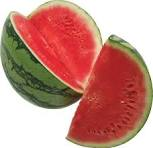
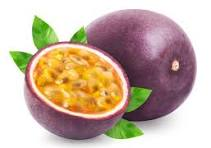

this is a menu page
Food, with its tantalizing aromas and mouthwatering flavors, is a universal language that speaks to the senses and brings people together in joyous celebration. From savory stews simmering on the stove to decadent desserts adorned with swirls of cream, every dish tells a story of tradition, culture, and culinary artistry. In the bustling streets of a vibrant market, the air is alive with the sizzle of street vendors grilling skewers of savory meats and the aroma of freshly baked bread wafting from bustling bakeries. Colorful displays of ripe fruits and vegetables beckon passersby, while the chatter of shoppers mingles with the rhythmic clang of pots and pans. Around the family dinner table, generations gather to share cherished recipes passed down through the ages. From hearty pasta dishes bursting with robust flavors to fragrant curries infused with exotic spices, each bite is a journey that evokes memories of home and hearth. In the kitchen, chefs become artists, transforming simple ingredients into culinary masterpieces that delight the palate and ignite the imagination. With precision and passion, they craft dishes that are as visually stunning as they are delicious, pushing the boundaries of taste and texture with innovative techniques and bold flavor combinations. Food is not just sustenance; it is a celebration of life itself – a symphony of flavors that nourishes the body and feeds the soul. Whether shared with loved ones around a table or savored alone in quiet contemplation, every meal is an opportunity to savor the richness of the human experience and embrace the beauty of the world around us.
- drinks
- juices
- Nutrient-Rich: Juice is a concentrated source of vitamins, minerals, and antioxidants found in fruits and vegetables. Consuming juice allows for the intake of a variety of nutrients that are essential for overall health and well-being.
- Hydration: Many fruits and vegetables have high water content, making juice an effective way to stay hydrated, especially for those who struggle to drink enough water throughout the day.
- Convenience: Juice offers a convenient and portable way to consume fruits and vegetables, especially for busy individuals who may not have time to prepare or eat whole fruits and vegetables.
- Variety: Juice allows for the incorporation of a wide variety of fruits and vegetables into one's diet, providing a diverse range of nutrients and flavors that may not be consumed otherwise.
- Digestive Health: Some fruits and vegetables contain dietary fiber, which can support digestive health by promoting regular bowel movements and preventing constipation. While juicing removes much of the fiber, some types of juice may still contain beneficial fiber, especially if made with whole fruits and vegetables.
- Antioxidants and Phytonutrients: Juice contains antioxidants and phytonutrients that help protect cells from damage caused by free radicals, reduce inflammation, and support overall health.
- Immune Support: Many fruits and vegetables used in juice are rich in vitamin C and other nutrients that support immune function, helping to strengthen the body's defense against infections and illnesses.
- Detoxification: Some proponents believe that juice cleanses or detox diets can help rid the body of toxins and promote overall health. While more research is needed to support these claims, consuming juice as part of a balanced diet may support the body's natural detoxification processes.
- hot beverage
- Hydration: Hot beverages, such as herbal teas and hot water with lemon, can contribute to daily hydration goals. While caffeinated hot beverages like coffee and tea have diuretic effects, the net hydration they provide is still positive.
- Improved Digestion: Hot beverages, especially herbal teas like chamomile or peppermint, can aid digestion by stimulating digestive enzymes and promoting gastrointestinal motility. They may also help alleviate symptoms of indigestion and bloating.
- Relaxation and Stress Reduction: Enjoying a warm beverage can have a calming effect on the mind and body, promoting relaxation and reducing stress levels. The ritual of preparing and savoring a hot drink can be soothing and therapeutic.
- Boosted Immune Function: Certain hot beverages, such as ginger tea or bone broth, contain immune-boosting nutrients and compounds that help support the body's defense against infections. The warmth of the beverage can also help soothe a sore throat and alleviate congestion.
- Antioxidant Intake: Hot beverages like green tea and herbal teas are rich in antioxidants, which help neutralize harmful free radicals in the body and reduce the risk of chronic diseases such as heart disease and cancer.
- Enhanced Cognitive Function: Caffeinated hot beverages like coffee and black tea can improve cognitive function, including alertness, concentration, and memory. They may also help reduce the risk of age-related cognitive decline.
- Warmth in Cold Weather: During colder months or in chilly environments, hot beverages provide warmth and comfort, helping to regulate body temperature and ward off the cold.
- Weight Management: Consuming hot beverages like plain hot water or herbal teas between meals can help curb appetite and reduce calorie intake, potentially aiding in weight management.
- Improved Hygiene: Hot beverages, particularly those prepared with boiling water, can help kill bacteria and pathogens present in the water or on the cup, contributing to better hygiene and reduced risk of illness.
- Social Connection: Sharing a cup of hot beverage with friends or family fosters social connections and strengthens relationships. It provides an opportunity for bonding and meaningful conversation.
- water-based drinks
- Convenience: Bottled water is readily available in stores, vending machines, and convenience stores, making it easily accessible for individuals on the go or in situations where tap water may not be available.
- Portability: Bottled water is portable and can be carried around easily, making it convenient for travel, outdoor activities, and emergencies.
- Safety: Bottled water undergoes strict quality control measures to ensure safety and purity. In areas where tap water quality is questionable, bottled water may provide a reliable alternative.
- Variety: Bottled water comes in various types, including still, sparkling, flavored, and enhanced with vitamins or minerals, offering consumers a wide range of choices to suit their preferences.
- Hydration: Bottled water provides hydration, essential for overall health and well-being. Staying hydrated is important for maintaining bodily functions, regulating body temperature, and supporting cognitive function.
- Portion Control: Bottled water is packaged in specific portion sizes, making it easier for individuals to control their water intake and avoid overconsumption.
- Emergency Preparedness: Bottled water can serve as an essential component of emergency preparedness kits, providing a safe and reliable source of drinking water during natural disasters or emergencies when access to clean tap water may be compromised.
- Taste Preference: Some individuals prefer the taste of bottled water over tap water, which may contain additives like chlorine or have a distinct taste or odor.
- Environmental Concerns: Bottled water production contributes to plastic pollution, with plastic bottles often ending up in landfills or polluting waterways. Additionally, the production, transportation, and disposal of bottled water consume resources and contribute to carbon emissions.
- Cost: Bottled water is often more expensive than tap water, especially when purchased in single-use plastic bottles. Over time, the cost of regularly purchasing bottled water can add up significantly.
- Regulatory Oversight: While bottled water is regulated by government agencies to ensure safety and quality, some critics argue that regulatory standards may not be as stringent as those for tap water. Additionally, the plastic packaging of bottled water may leach chemicals into the water over time.
- Sustainability: Choosing reusable water bottles and opting for tap water or filtered water can help reduce plastic waste and environmental impact associated with bottled water consumption.
- cakes
- black Forest cake
- 1 and 3/4 cups (220g) all-purpose flour
- 3/4 cup (65g) unsweetened cocoa powder
- 2 cups (400g) granulated sugar
- 2 teaspoons baking powder
- 1 teaspoon baking soda
- 1 teaspoon salt
- 2 large eggs, at room temperature
- 1 cup (240ml) whole milk, at room temperature
- 1/2 cup (120ml) vegetable oil
- 2 teaspoons vanilla extract
- 1 cup (240ml) boiling water
- 2 cups (480ml) heavy cream, chilled
- 1/4 cup (30g) powdered sugar
- 1 teaspoon vanilla extract
- 1 can (20 oz) of cherries, drained (reserve some for garnish)
- 1/4 cup (60ml) cherry liqueur (optional) Instructions
- Preheat your oven to 350°F (175°C). Grease and flour two 9-inch round cake pans or line them with parchment paper.
- In a large mixing bowl, sift together the flour, cocoa powder, sugar, baking powder, baking soda, and salt.
- Add the eggs, milk, oil, and vanilla extract to the dry ingredients. Beat on medium speed for 2 minutes until well combined.
- Stir in the boiling water until the batter is smooth. The batter will be thin.
- Divide the batter evenly between the prepared cake pans. Bake in the preheated oven for 30-35 minutes or until a toothpick inserted into the center comes out clean.
- Remove the cakes from the oven and allow them to cool in the pans for 10 minutes. Then, transfer them to a wire rack to cool completely.
- While the cakes are cooling, prepare the whipped cream. In a chilled mixing bowl, beat the heavy cream, powdered sugar, and vanilla extract until stiff peaks form.
- If using, brush the tops of the cooled cake layers with cherry liqueur.
- To assemble the cake, place one cake layer on a serving plate. Spread a layer of whipped cream over the cake, then top with a layer of cherries.
- Place the second cake layer on top and cover the entire cake with whipped cream.
- Decorate the top of the cake with reserved cherries and chocolate shavings if desired.
- Refrigerate the cake for at least 2 hours before serving to allow the flavors to meld together.
- vanilla Cake
- 2 1/2 cups (300g) all-purpose flour
- 1 1/2 cups (300g) granulated sugar
- 1 cup (240ml) whole milk, at room temperature
- 1/2 cup (120ml) vegetable oil or melted butter
- 4 large eggs, at room temperature
- 2 teaspoons vanilla extract
- 2 teaspoons baking powder
- 1/2 teaspoon salt Instructions
- Preheat your oven to 350°F (175°C). Grease and flour two 9-inch round cake pans or line them with parchment paper for easy removal.
- In a large mixing bowl, whisk together the flour, sugar, baking powder, and salt until well combined.
- In another bowl, whisk together the milk, vegetable oil (or melted butter), eggs, and vanilla extract until smooth and well combined.
- Gradually add the wet ingredients to the dry ingredients, whisking until the batter is smooth and no lumps remain.
- Divide the batter evenly between the prepared cake pans, smoothing the tops with a spatula.
- Bake in the preheated oven for 25-30 minutes, or until a toothpick inserted into the center of the cakes comes out clean.
- Remove the cakes from the oven and allow them to cool in the pans for 10 minutes. Then, carefully transfer them to a wire rack to cool completely.
- Once the cakes are completely cooled, you can frost them with your favorite frosting, such as vanilla buttercream or cream cheese frosting.
- Slice and serve the vanilla cake, and enjoy!
- Chocolate Cake
- 1 and 3/4 cups (220g) all-purpose flour
- 3/4 cup (65g) unsweetened cocoa powder
- 2 cups (400g) granulated sugar
- 2 teaspoons baking soda
- 1 teaspoon baking powder
- 1 teaspoon salt
- 2 large eggs, at room temperature
- 1 cup (240ml) buttermilk, at room temperature
- 1/2 cup (120ml) vegetable oil
- 2 teaspoons vanilla extract
- 1 cup (240ml) hot water
-
-
Instructions
- Preheat your oven to 350°F (175°C). Grease and flour two 9-inch round cake pans or line them with parchment paper for easy removal.
- In a large mixing bowl, sift together the flour, cocoa powder, sugar, baking soda, baking powder, and salt until well combined.
- In another bowl, whisk together the eggs, buttermilk, vegetable oil, and vanilla extract until smooth and well
- combined.
- Gradually add the wet ingredients to the dry ingredients, mixing until the batter is smooth and well combined.
- Slowly pour in the hot water while stirring continuously, until the batter is smooth and well combined. The batter will be thin, but that's okay.
- Divide the batter evenly between the prepared cake pans, smoothing the tops with a spatula.
- Bake in the preheated oven for 30-35 minutes, or until a toothpick inserted into the center of the cakes comes out clean.
- Remove the cakes from the oven and allow them to cool in the pans for 10 minutes. Then, carefully transfer them to a wire rack to cool completely.
- Once the cakes are completely cooled, you can frost them with your favorite frosting, such as chocolate buttercream or ganache.
- Slice and serve the chocolate cake, and enjoy!
This homemade chocolate cake is perfect for any occasion, from birthdays to celebrations, or simply as a delicious treat to enjoy with friends and family. Its moist and tender crumb paired with rich chocolate flavor is sure to be a crowd-pleaser!
- Fruits
- Watermelon 
- Rich in Nutrients: Despite its high water content, watermelon is also packed with essential nutrients, including vitamins A, C, and B vitamins like B6. It also contains minerals like potassium and magnesium.
- Antioxidant Properties: Watermelon is rich in antioxidants like lycopene, which gives it its red color. Lycopene is associated with reduced risk of certain diseases, including heart disease and certain types of cancer./li>
- Heart Health: The combination of antioxidants, including lycopene, and other nutrients found in watermelon may contribute to heart health by reducing inflammation and lowering blood pressure.
- Hydration and Skin Health: The high water content in watermelon helps keep the body hydrated, which is essential for healthy skin. Additionally, the vitamins A and C in watermelon play a role in promoting healthy skin and collagen production.
- Muscle Recovery: Watermelon contains citrulline, an amino acid that may help reduce muscle soreness and improve exercise performance. Some studies suggest that citrulline supplementation may enhance athletic performance and recovery.
- Weight Management: Watermelon is low in calories and fat while being high in water and fiber, making it a filling and satisfying snack option that may help with weight management by promoting feelings of fullness and reducing overall calorie intake.
- Digestive Health: The fiber content in watermelon supports digestive health by promoting regular bowel movements and preventing constipation.
- Eye Health: Watermelon contains beta-carotene, a precursor to vitamin A, which is essential for eye health and may help reduce the risk of age-related macular degeneration (AMD) and other eye conditions.
- Overall Well-Being Incorporating watermelon into a balanced diet provides a delicious and refreshing way to boost overall health and well-being due to its nutrient-rich profile and hydrating properties.
- Pineaple
- High in Vitamin C: Pineapples are an excellent source of vitamin C, a powerful antioxidant that supports immune function, helps in collagen production for healthy skin, and aids in wound healing.<.li>
- Rich in Bromelain: Pineapples contain bromelain, a mixture of enzymes known for its anti-inflammatory properties. Bromelain may help reduce inflammation, alleviate symptoms of arthritis, and promote digestive health by aiding in the breakdown of proteins.
- Digestive Health: Bromelain, found abundantly in pineapples, can aid in digestion by breaking down proteins in the digestive tract, which may help alleviate symptoms of indigestion and bloating.
- Anti-Inflammatory Properties: Bromelain in pineapples has been shown to possess potent anti-inflammatory properties, which may help reduce inflammation associated with conditions like osteoarthritis and sinusitis.
- Immune Support: The high vitamin C content in pineapples helps support immune function, making it beneficial for fighting off infections and reducing the severity of colds and flu.
- Heart Health: Pineapples contain compounds like potassium and fiber that support heart health. Potassium helps regulate blood pressure and reduce the risk of stroke and heart disease, while fiber helps lower cholesterol levels and promote a healthy cardiovascular system. Eye Health: Pineapples contain beta-carotene, a precursor to vitamin A, which is essential for maintaining healthy vision and preventing eye-related disorders like macular degeneration.
- Hydration: Pineapples have a high water content, which helps keep the body hydrated and supports overall hydration levels.
- Weight Management: Pineapples are low in calories and fat and high in fiber, making them a satisfying and nutritious snack option that may aid in weight management by promoting feelings of fullness and reducing overall calorie intake. Healthy Skin: The vitamin C content in pineapples promotes collagen production, which helps maintain healthy skin, reduces the appearance of wrinkles, and promotes wound healing.
- passionfruit 
- High in Vitamin C: Pineapples are an excellent source of vitamin C, a powerful antioxidant that supports immune function, helps in collagen production for healthy skin, and aids in wound healing.
- Rich in Bromelain: Pineapples contain bromelain, a mixture of enzymes known for its anti-inflammatory properties. Bromelain may help reduce inflammation, alleviate symptoms of arthritis, and promote digestive health by aiding in the breakdown of proteins.
- Digestive Health: Bromelain, found abundantly in pineapples, can aid in digestion by breaking down proteins in the digestive tract, which may help alleviate symptoms of indigestion and bloating.
- Anti-Inflammatory Properties: Bromelain in pineapples has been shown to possess potent anti-inflammatory properties, which may help reduce inflammation associated with conditions like osteoarthritis and sinusitis.
- Immune Support: The high vitamin C content in pineapples helps support immune function, making it beneficial for fighting off infections and reducing the severity of colds and flu.
- Heart Health: Pineapples contain compounds like potassium and fiber that support heart health. Potassium helps regulate blood pressure and reduce the risk of stroke and heart disease, while fiber helps lower cholesterol levels and promote a healthy cardiovascular system.
- Eye Health: Pineapples contain beta-carotene, a precursor to vitamin A, which is essential for maintaining healthy vision and preventing eye-related disorders like macular degeneration.
- Hydration: Pineapples have a high water content, which helps keep the body hydrated and supports overall hydration levels.
- Weight Management: Pineapples are low in calories and fat and high in fiber, making them a satisfying and nutritious snack option that may aid in weight management by promoting feelings of fullness and reducing overall calorie intake. Healthy Skin: The vitamin C content in pineapples promotes collagen production, which helps maintain healthy skin, reduces the appearance of wrinkles, and promotes wound healing.

However, it's essential to consider the potential drawbacks and environmental impact associated with bottled water consumption. These include:
Black Forest cake is a classic dessert known for its layers of chocolate sponge cake, whipped cream, and cherries. Here's a traditional recipe for making Black Forest cake
IngredientsFor the Chocolate Sponge Cake
For the Filling and Topping
Black Forest cake is best served chilled and can be enjoyed on special occasions or as a delightful treat any time of the year. Enjoy

Vanilla cake is a classic and beloved dessert enjoyed by people of all ages. Here's a simple recipe for a delicious homemade vanilla cake.
IngredientsThis vanilla cake recipe is versatile and can be customized with various frostings, fillings, and decorations to suit your taste preferences or special occasions. It's perfect for birthdays, celebrations, or simply as a sweet treat to enjoy with a cup of coffee or tea.
Chocolate cake is a timeless favorite, loved for its rich flavor and decadent texture. Here's a classic recipe for a homemade chocolate cake
Chocolate cake is a timeless favorite, loved for its rich flavor and decadent texture. Here's a classic recipe for a homemade chocolate cakeIngredients
- Hydration: Watermelon is made up of about 92% water, making it an excellent choice for staying hydrated, especially during hot weather or after physical activity.